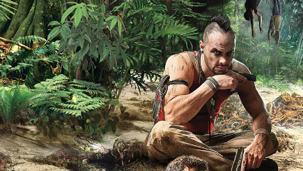

Platform(s): PlayStation4 system, Xbox One, PC
Release: February 27, 2018
Developer(s): Ubisoft Montreal, Ubisoft Toronto
Welcome to Hope County, Montana.
The story of Far Cry 5 takes place in Montana.
I explain why that's the perfect setting in this post (though, as a native Montanan, I'm biased.)
You play as a Sheriff's deputy who has arrived in Hope County only to discover that the entire region has been taken over by a doomsday cult,
The Project at Eden's Gate.
Your job is to help rally the locals into the Resistance, and take out the cult.
Meanwhile, some locals will take the side of the militia cultists.
Freely explore Hope County’s rivers, lands and skies with the largest customisable weapon and vehicle roster ever in a Far Cry game.
You are the hero of the story in a thrilling world that hits back with every punch, and where the places you discover and the
You may also like
-
Far Cry Primal
Platform(s): PlayStation4 system, Xbox One, PC
Release: 23.02.2016 -
Far Cry 3 Blood Dragon
Platform(s): PlayStation4 system, Xbox One, PC
Release: 01.05.2013 -

Far Cry 3
Platform(s): PlayStation4 system, Xbox One, PC
Release: 29.11.2012 -
Far Cry 4
Platform(s): PlayStation4 system, Xbox One, PC
Release: 18.11.2014